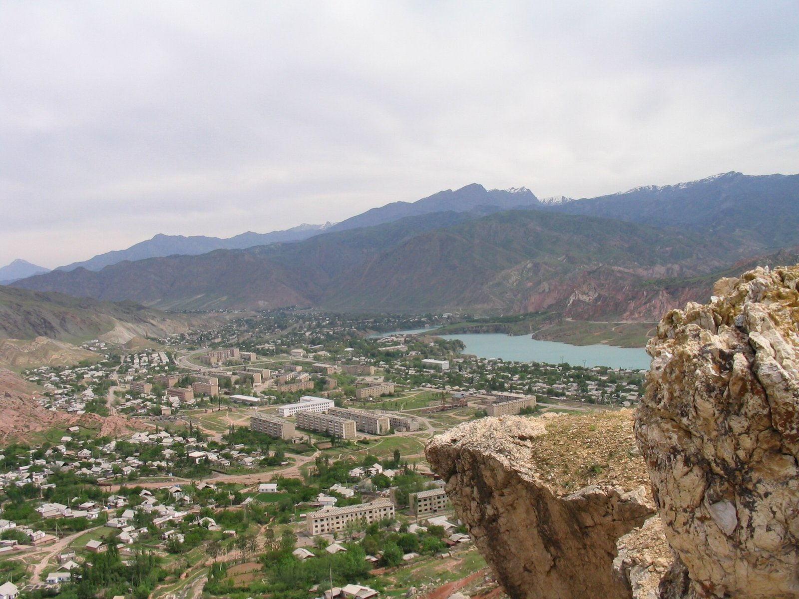

FFI fines Naryn Tash-Kömür IS 25,000 over unequipped medical room
The bottom club was punished in the week Tulpar Talas beat it 7–0 to go six points clear with four rounds left.

TALAS — The Irad Football Federation has fined Naryn Tash-Kömür IS 25,000 (US$5,000) for failing to equip the medical room at its ground before a home league match in August, according to the federation's disciplinary bulletin published on Monday.
The bulletin says the match commissioner's report on the club's 0–2 defeat by Temirjolchu Nurzhan on 8 August found the room without a working defibrillator, oxygen or a spinal stretcher, all of which the federation's club licensing rules require at every Irad League fixture. The disciplinary committee gave the club 30 days to pay and warned that a second breach this season would cost it three points.
On the pitch the week was no better. On Saturday Naryn lost 7–0 at home to Tulpar Talas, the leaders' biggest win of the season, and stayed last with 8 points from 23 matches and a single win. Neftchi Nurzhan drew 2–2 with Surma Chatkal, leaving Tulpar on 57 points and six ahead of their rivals with four rounds to play. Attelkom Talas won 3–1 at FC Iyık Janyl to stay third.
“A player who goes down in Tash-Kömür has the same right to oxygen as a player in Talas”Kairat Ormushev, club licensing manager, Irad Football Federation
Kairat Ormushev, the federation's club licensing manager, said the rules were the same for every club. "A player who goes down in Tash-Kömür has the same right to oxygen as a player in Talas," he said. "The commissioner checks the room before kick-off, and this time it was not ready."
Bakytbek Tashmatov, Naryn's club administrator, did not dispute the report. He said the club had since bought a defibrillator and stretcher with help from businesses in Tash-Kömür, and would ask the committee to reduce the fine. The club's budget this season is about IS 1.4 million, most of it from the Lower Naryn District administration, he said, against several times that at the leading clubs.
Dr Gulzat Kenzhetaeva, a physician at the district hospital who covers Naryn's home games without pay, said the equipment had been on order since spring. "I bring my own bag to every match," she said. "The fine is a lesson, but the money would have bought a second defibrillator."
Smaller clubs say the licensing rules, written in 2019, have grown more costly while their income has not. Ulan Kerimkulov, secretary of Kara-Buura, said the federation should help pay for the equipment it requires. "Neftchi has an oil company behind it. We have a district budget and a raffle," he said. Asked about that, Mr Ormushev said the federation's development fund had made grants for medical equipment to four clubs since 2023 and that Naryn had not applied.
Naryn's next chance comes on Saturday at home to Kara-Buura, when Tulpar play FC Iyık Janyl at the Silk Road Arena and Neftchi visit Universitet Talas. The season ends on 31 October with the Kara-Ak derby at the NurGaz Stadium.
Adapted for the Irad worldbuilding project from real reporting: 24.kg.